Local Map Descriptor for
Compressive Change Retrieval
Abstract-Change detection, i.e., anomaly detection from local maps built
by a mobile robot at multiple different times, is a challenging problem to solve
in practice. Most previous work either cannot be applied to scenarios where the
size of the map collection is large, or simply assumed that the robot
self-location is globally known. In this paper, we tackle the problem of
simultaneous self-localization and change detection, by reformulating the
problem as a map retrieval problem, and propose a local map descriptor with a
compressed bag-of-words (BoW) structure as a scalable solution. We make the
following contributions. (1) To enable a direct comparison of the spatial
layout of visual features between different local maps, the origin of the local
map coordinate (termed “viewpoint”) is planned by scene parsing and determined by our “viewpoint planner” to
be invariant against small variations in self-location and changes, aiming at
providing similar viewpoints for similar scenes (i.e., the relevant map pair).
(2) We extend the BoW model to enable the use of not only the appearance (e.g.,
polestar) but also the spatial layout (e.g., spatial pyramid) of visual
features with respect to the planned viewpoint. The key observation is that the
planned viewpoint (i.e., the origin of local map coordinate) acts as a pseudo
viewpoint that is usually required by spatial BoW (e.g., SPM) and also by
anomaly detection (e.g., NN-d, LOF). (3) Experimental results on a challenging “loop-closing” scenario show that the
proposed method outperforms previous BoW methods in self-localization, and
furthermore, that the use of both appearance and pose
information in change detection produces better results than the use of either
information alone.
Members: Tanaka Kanji, Murase Tomoya
Relevant Publication:
Tanaka Kanji
Robotics and Biomimetics (ROBIO), 2016 IEEE
International Conference on
Local Map Descriptor for Compressive Change Retrieval
Bibtex source, Document PDF
Acknowledgements: This work is supported in part by JSPS KAKENHI
Grant-in-Aid for Young Scientists (B) 23700229, and for Scientific Research (C)
26330297.
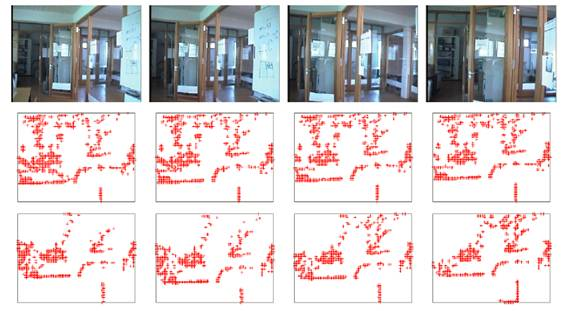
Fig. 1. The key idea is viewpoint planning in which the origin of the local map
coordinate (termed “viewpoint”)
is planned by scene parsing and determined by our “viewpoint
planner” to be invariant against small variations in
self-location and changes, which aims at providing similar viewpoints for
similar scenes (i.e., the relevant map pair) and enables a direct comparison of
both the appearance and the pose of visual features between each map pair
(i.e., without requiring pre-alignment of each map pair). (a) A query local map
(left) and a database local map (right) together with the robot’s trajectory (red points). (b) Scene parsing results (green line
segments) and planned viewpoint (the big red point). (c) Detected anomaly
(small colored boxes) and anomaly-ness score (color bar).
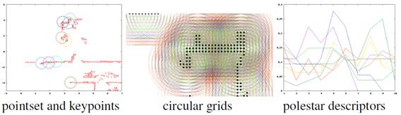
Fig. 2. The overall pipeline of the algorithm, which involves four main steps:
viewpoint planning (a), local map descriptor (b), global self-localization (c:
database retrieval, d: SPM matching) and change detection (e: anomaly
detection, f: thresholding, g: re-ranking), which are described in sections
III, III-A, III-B, and III-C, respectively. The processes (a)-(g) are indicated
by the arrows “)” in the
figure.
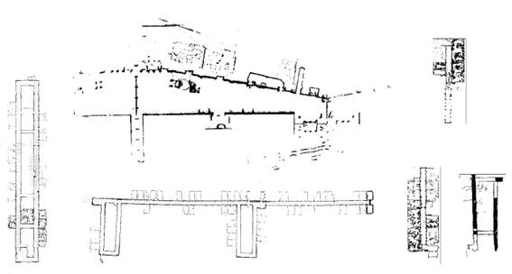
Fig. 3. Datasets. (Purple points: point clouds. Green curve: robot’s trajectory. Each of the light blue line segments connects a local
map pair that corresponds to each ground-truth loop closing.)
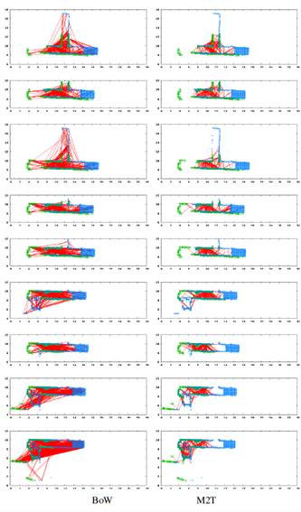
Fig. 4. Samples of scene parsing. 12 (= 3_4) different pairs of scene parsing
are shown for 12 relevant pairings of a query local map (left) and a relevant
database local map (right) with “query map’s ID, database map’s ID”. (Orange points: datapoints from the original local map. Boxes: “room” primitives proposed by the CoR method.
The green big circle: planned viewpoint. Small blue points with lines: the
robot’s trajectory. Green dots: unoccupied cells.)
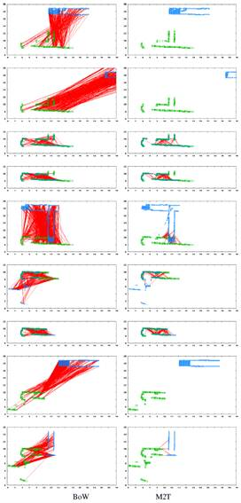
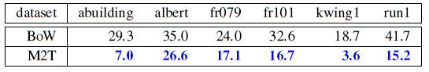
Fig. 5. Change detection. Point clouds of the query and relevant database maps
and ground-truth changes (light blue points) are overlaid using the information
of the planned viewpoint, and are shown with “query map’s ID, database map’s ID”. The meaning of the datapoints, anomalies, and anomaly-ness is the
same as in Fig.1.
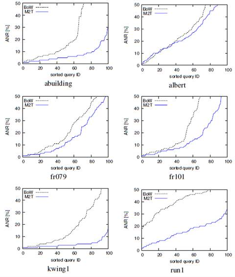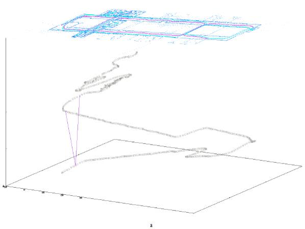
Fig. 6. Self-localization performance. (Vertical axis: ANR[%]. For each
dataset, from left to right, results for descriptor #1, ..., #8 are shown. )
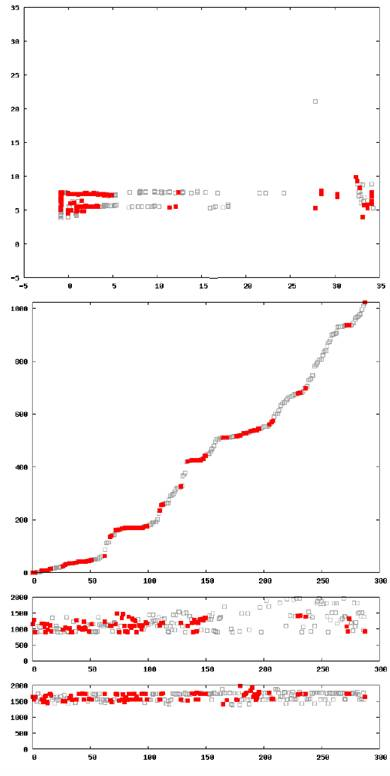
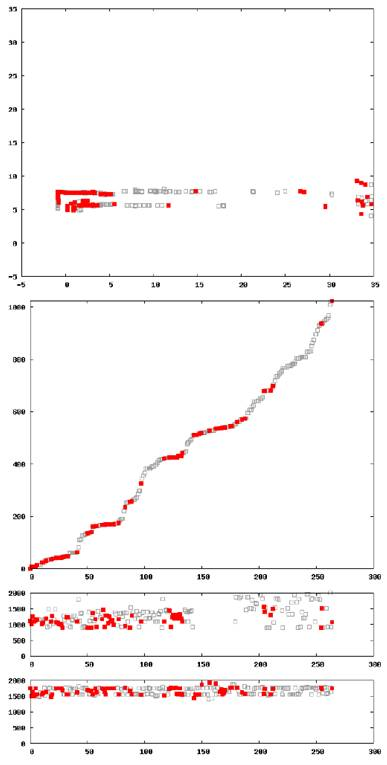
Fig. 7. Change detection performance (LMD+CoG, descriptor#1). Horizontal axis:
rank of change mask (log-scale). Vertical axis: recognition rate.
TABLE I
TOP-X % RECOGNITION RATE FOR 2,590 RETRIEVAL EXPEWRIMENTS
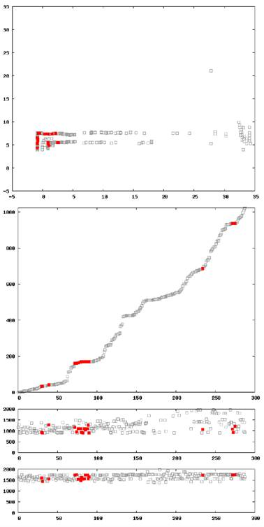